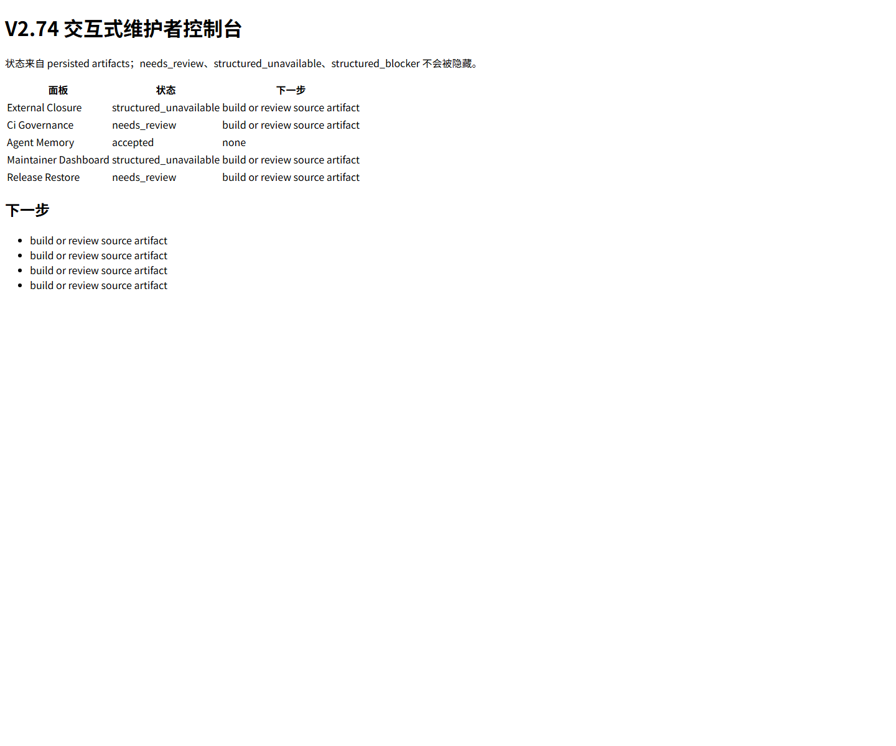
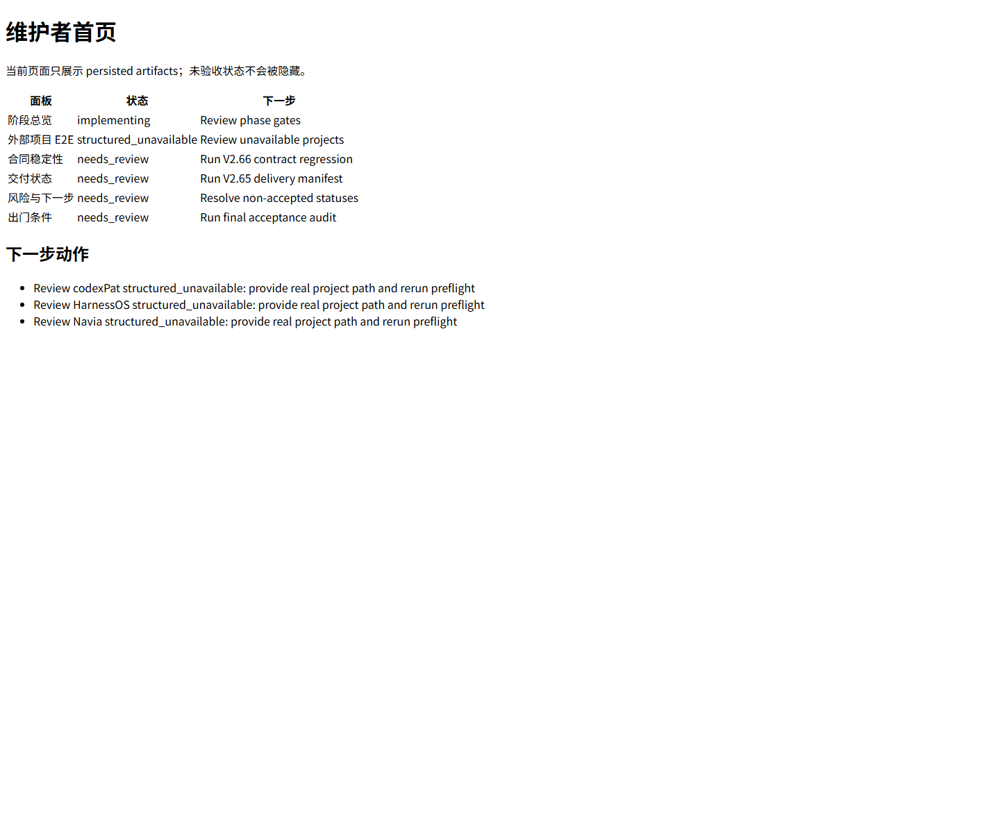
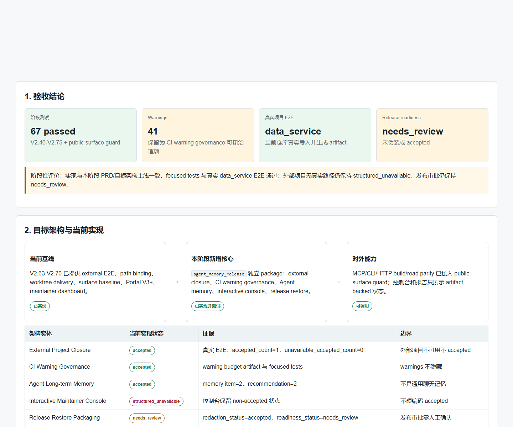

1. 验收结论
阶段测试
67 passed
V2.46-V2.75 + public surface guard
Warnings
41
保留为 CI warning governance 可见治理项
真实项目 E2E
data_service
当前仓库真实导入并生成 artifact
Release readiness
needs_review
未伪装成 accepted
阶段性评价：实现与本阶段 PRD/目标架构主线一致，focused tests 与真实 data_service E2E 通过；外部项目无真实路径仍保持 structured_unavailable，发布审批仍保持 needs_review。
2. 目标架构与当前实现
当前基线
V2.63-V2.70 已提供 external E2E、path binding、worktree delivery、surface baseline、Portal V3+、maintainer dashboard。
已实现
→
本阶段新增核心
agent_memory_release 独立 package：external closure、CI warning governance、Agent memory、interactive console、release restore。
已实现并测试
→
对外能力
MCP/CLI/HTTP build/read parity 已接入 public surface guard；控制台和报告只展示 artifact-backed 状态。
可调用
| 架构实体 | 当前实现状态 | 证据 | 边界 |
|---|---|---|---|
| External Project Closure | accepted | 真实 E2E：accepted_count=1，unavailable_accepted_count=0 | 外部项目不可用不 accepted |
| CI Warning Governance | accepted | warning budget artifact 与 focused tests | warnings 不隐藏 |
| Agent Long-term Memory | accepted | memory item=2，recommendation=2 | 不是通用聊天记忆 |
| Interactive Maintainer Console | structured_unavailable | 控制台保留 non-accepted 状态 | 不硬编码 accepted |
| Release Restore Packaging | needs_review | redaction_status=accepted，readiness_status=needs_review | 发布审批需人工确认 |
3. 自动化验收与覆盖
| 检查项 | 命令/来源 | 结果 | 评价 |
|---|---|---|---|
| V2.46-V2.75 focused tests | pytest 阶段测试集合 | 67 passed, 41 warnings | 通过；warnings 保留治理 |
| 编译检查 | python3 -m compileall | 通过 | 未发现语法级失败 |
| 格式检查 | git diff --check | 通过 | 无 whitespace error |
| Legacy 边界 | git diff --name-only | 无输出 | 受保护 legacy 文件未改动 |
| Public surface | test_public_surface_guard.py | 通过 | 新增 MCP/CLI/HTTP surface 已纳入 guard |
4. 真实 data_service E2E 结果
codebase_id
codebase_data_service
external E2E accepted
1 / 4
structured_unavailable
3
unavailable accepted
0
| 字段 | 观测值 | 验收含义 |
|---|---|---|
| path_binding.accepted_count | 1 | 当前 data_service 真实路径已绑定 |
| closure.accepted_count | 1 | 只接受有真实证据的 data_service |
| closure.structured_unavailable_count | 3 | codexPat、HarnessOS、Navia 未提供真实路径 |
| surface_breaking_count | 0 | 本轮未发现 breaking public surface drift |
| worktree_safe_to_delete_true_count | 0 | 未自动把任何文件标记为可删除 |
5. 用户场景截图证据




6. 未完成项与 false-green 风险
| 风险/限制 | 当前状态 | 处理结论 |
|---|---|---|
| codexPat、HarnessOS、Navia 未提供真实路径 | structured_unavailable | 不能 accepted；需要真实路径和真实 E2E 证据 |
| Release readiness | needs_review | 需要发布前人工审批；本报告不声称可无条件发布 |
| 测试 warnings | visible warnings | 不是当前功能 blocker，但必须继续纳入 CI warning governance |
7. 最终验收评价
本轮阶段性验收通过，结论限定为：V2.71-V2.75 在当前本地 data_service 真实项目范围内通过代码检视、文档审计、功能检查、focused tests、真实 E2E 和可视化截图验收。
不通过项没有被伪装：外部项目仍是 structured_unavailable，发布 readiness 仍是 needs_review，warnings 仍可见。后续若要声明外部多项目完整 accepted，必须补充真实 repo path、依赖环境和 E2E 证据。